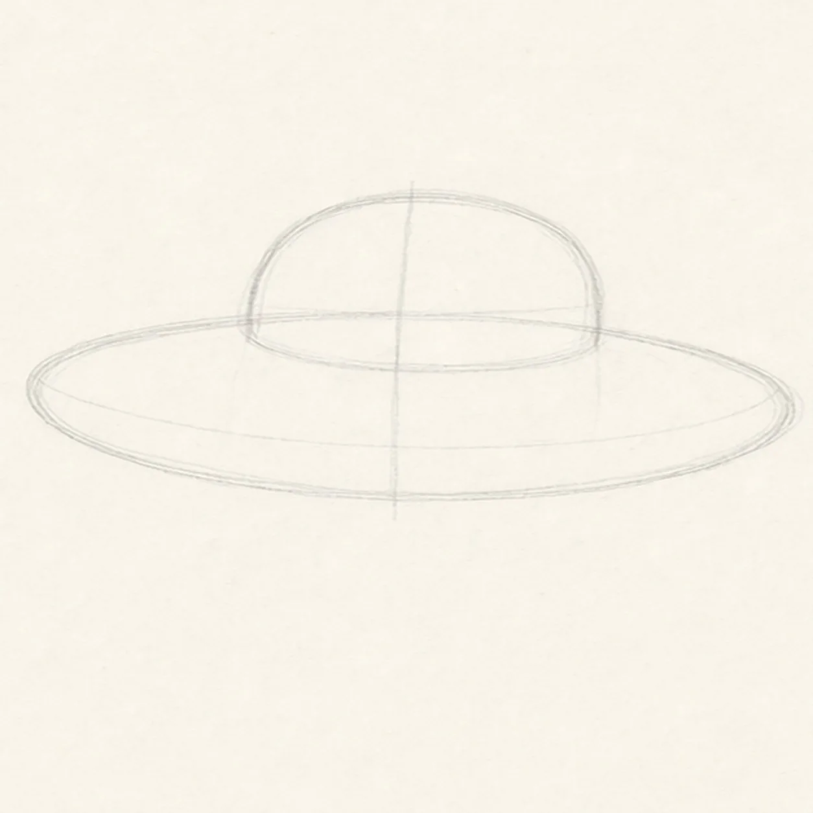
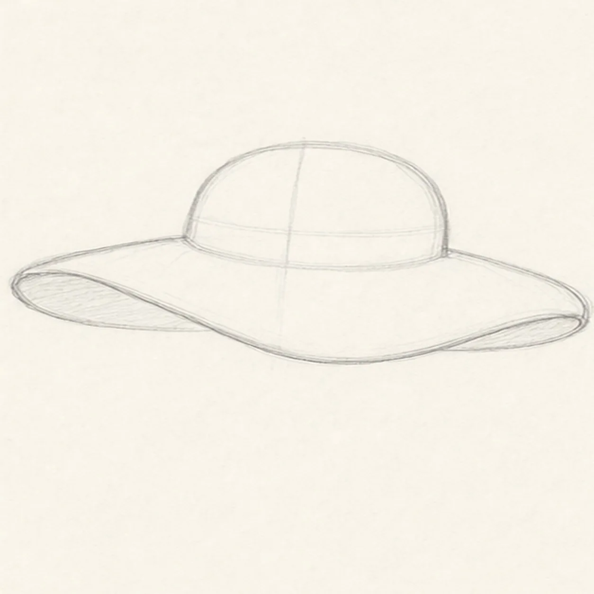
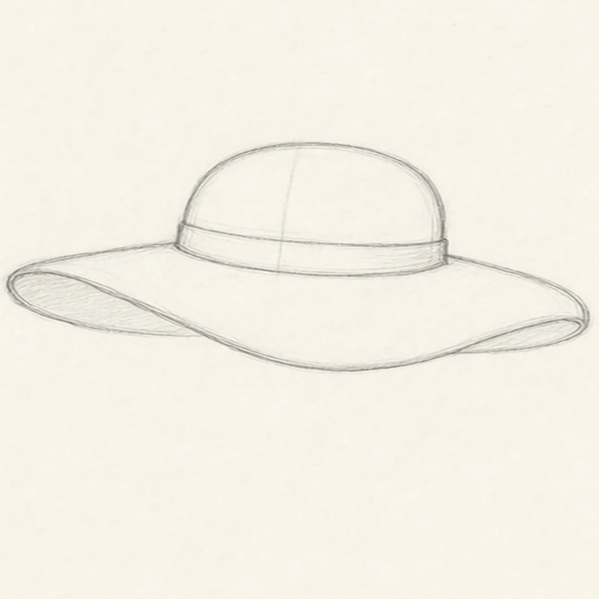
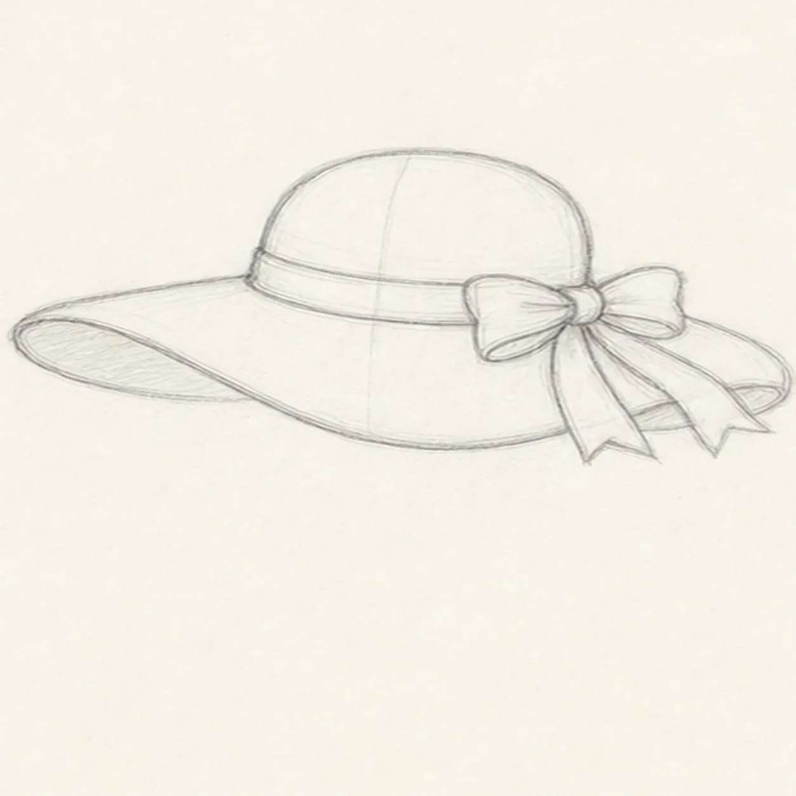
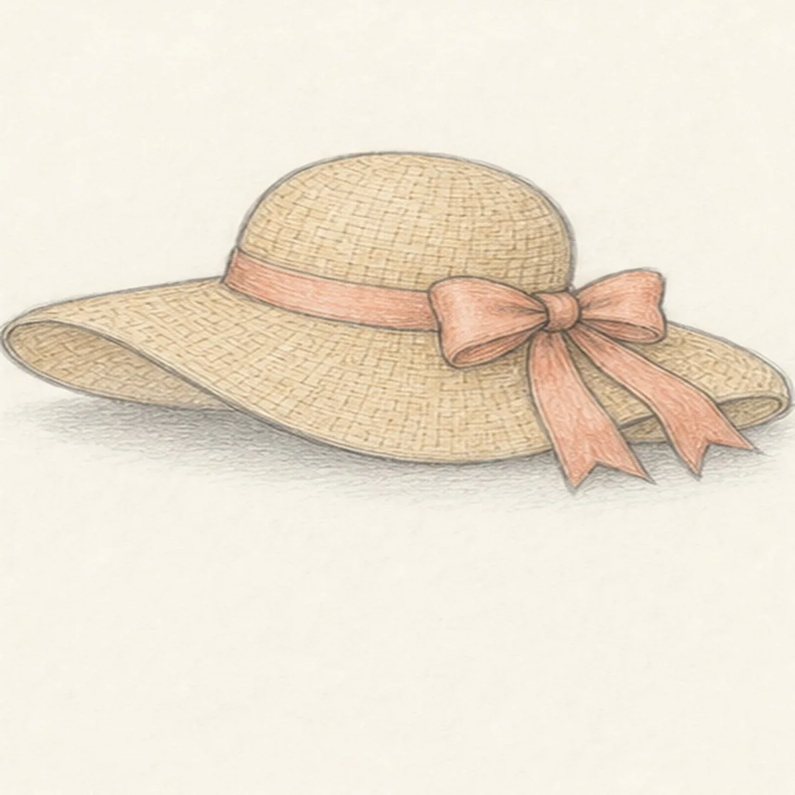

From the archive
Let's draw a summer sun hat with a ribbon
Treat this as one small practice round: build the subject lightly, notice the shapes, then darken only the lines that help the finished sketch.
-
01

Place the hat guides
Draw a wide tilted oval for the brim, then add a rounded crown guide rising from the middle.
Sketch tip: Keep the crown centered on the brim. A light vertical guide helps the hat feel balanced.
-
02

Loosen the brim
Turn the guide oval into a floppy brim by dipping the front edge and showing a curved underside on both sides.
Sketch tip: Let the brim wobble a little. A sun hat looks better when the edge is relaxed instead of perfectly mechanical.
-
03

Wrap the ribbon band
Clean up the crown shape and draw a ribbon band around its base, following the curve of the hat.
Sketch tip: The band should bend with the crown. If it is too straight, the hat will look flat.
-
04

Tie the side bow
Add a small bow on one side of the band, then let two ribbon tails hang down over the brim.
Sketch tip: Build the bow from soft loops first, then add the tail points. They do not need to match exactly.
-
05

Sketch straw and shade
Add loose woven marks across the crown and brim, tint the straw and ribbon lightly, and place a soft shadow under the brim.
Sketch tip: Use broken texture lines rather than a full grid. The gaps keep the hat from becoming too busy.
-
06
Finish the sunny hat
Darken the keeper contours, clarify the bow and weave marks, and deepen the color and shadow that are already on the page.
Sketch tip: Stop while the paper still shows through. A little uneven graphite makes the hat feel drawn by hand.